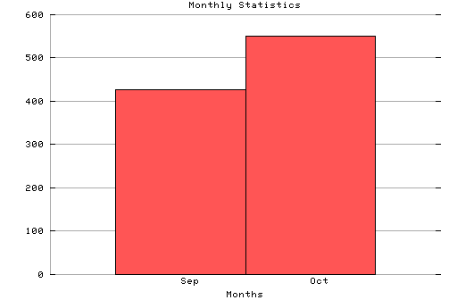

HTTP Server Monthly Statistics Covers: 09/25/95 to 10/08/95 (14 days). All dates are in local time. Sep (09/25/95): 427 : Oct (10/01/95): 550 : # Statistics generated at Fri Oct 13 16:42:01 MET 1995, (C) Oslonett AS, 1995.
Statistics generated at Fri Oct 13 16:42:01 MET 1995, (C) Oslonett AS, 1995.